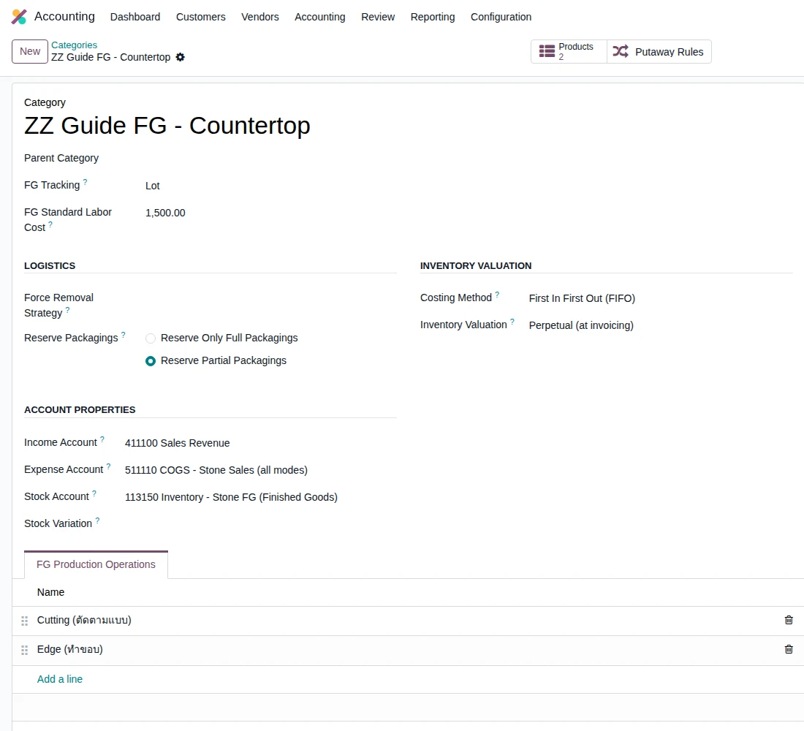
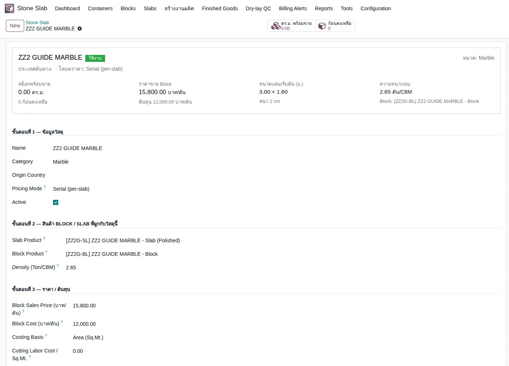
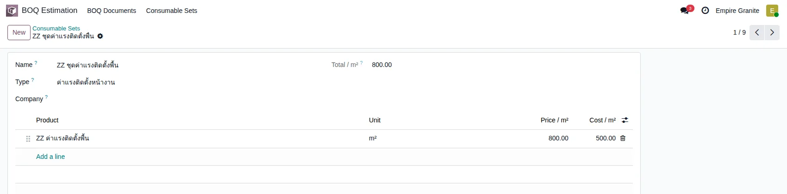
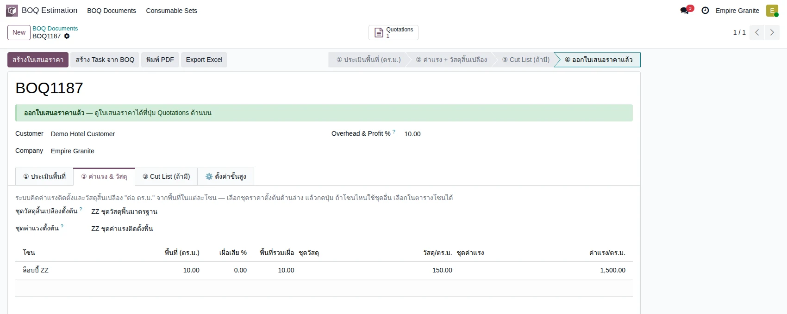
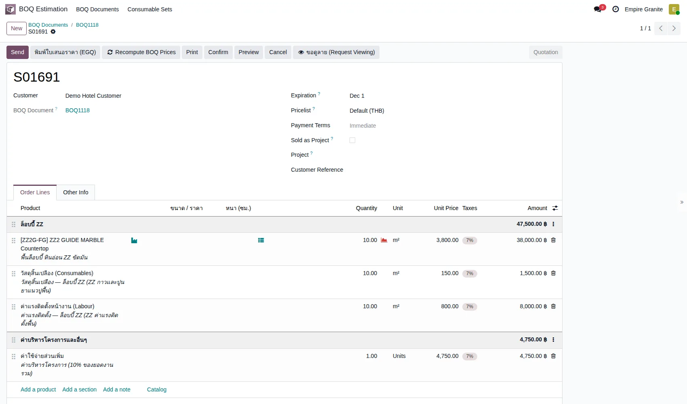

Empire Stone × Empire Granite — QA
Golden Path — Setup ระบบ: ตั้งค่าแล้วใช้กับ BOQ และใบเสนอราคา
อัปเดตล่าสุด: 3 พฤศจิกายน 2569 (2026-11-03) · รันจริงบน eg-tst ผ่านหน้าจอ ใช้ผู้ใช้ emgdemo บริษัท Empire Granite
เอกสารเดียวสำหรับเรื่อง Setup: ตั้งหมวด FG · ตั้งสินค้าหินด้วย Quick Material Setup · ตั้งชุดวัสดุและชุดค่าแรงสำหรับ BOQ · แล้วทดสอบว่าค่าที่ตั้งไปทำงานจริงใน BOQ และใบเสนอราคา ทุกเคสเขียนให้ผู้ใช้ไม่เทคนิคทำตามได้ ไม่รวมเคสกรอกผิดหรือดักข้อผิดพลาด ข้อมูลตัวอย่างทั้งหมดขึ้นต้นด้วย ZZ
5Test Case ทั้งหมด
2หมวด
5High Priority
0Medium Priority
0Low Priority
เอกสารนี้แทนส่วน Setup ของ test-cases-product-setup (ฉบับเก่า)
- ฉบับเก่ายังพูดถึง Rate Library ตัวเลือก "มุม" และปุ่มสร้าง Block จากบรรทัด PO ซึ่งไม่มีในระบบแล้ว — ไม่ได้แก้ไฟล์เก่า
- ทำตามทีละขั้นด้วยคู่มือ คู่มือกดตาม Setup ระบบ (มีเหตุผลของแต่ละค่าที่กรอก) · เอกสารนี้ใช้ตรวจผล
- ขอบเขต 5 เคส: ตั้งค่า 3 เคส + ใช้ค่าที่ตั้งกับ BOQ/ใบเสนอราคา 2 เคส
A. ตั้งค่าระบบ
ตั้งหมวด FG · ตั้งสินค้าหินด้วย Quick Material Setup · ตั้งชุดวัสดุและชุดค่าแรง · 3 test cases
| TC ID | Scenario | Precondition | Steps | ข้อมูลตัวอย่าง | Expected Result | Priority | ภาพหน้าจอ |
|---|---|---|---|---|---|---|---|
| TC-GP-SET-01 | ตั้งหมวดสินค้าสำเร็จรูป (FG) พร้อมค่าแรงและขั้นตอนผลิต หมวด FG ต้องตั้งก่อนตั้งสินค้าหิน เพราะตอนตั้งหินต้องเลือกหมวดนี้ · ฟอร์มหมวดยังไม่มีช่องต้นทุนวัสดุสิ้นเปลือง (ระบบมีช่องในข้อมูล แต่หน้าจอไม่แสดง) ต้นทุนส่วนนี้จึงเป็น 0 |
เข้าระบบเป็น Empire Granite · มีสิทธิ์เข้าเมนู Inventory > Configuration |
|
ชื่อ ZZ Guide FG - Countertop · FG Tracking = Lot · ค่าแรงมาตรฐาน 1500 · Costing Method = FIFO · Inventory Valuation = Perpetual (at invoicing) · Expense Account = 511110 · Stock Account = 113150 · ขั้นตอน: Cutting (ตัดตามแบบ), Edge (ทำขอบ) | บันทึกสำเร็จ ชื่อหมวดขึ้นที่แถบนำทาง · FG Tracking = Lot · FG Standard Labor Cost = 1,500.00 · Costing Method = FIFO และ Inventory Valuation = Perpetual · บัญชี 511110 และ 113150 · ตารางขั้นตอนมี 2 แถวตามลำดับที่พิมพ์ | High |  |
| TC-GP-SET-02 | ตั้งสินค้าหินด้วย Quick Material Setup ให้ได้ Slab, Block และ FG ในครั้งเดียว Setup Mode ใช้ "สร้าง Material ใหม่" · ขนาดแผ่นมาตรฐานกรอกเป็นเมตร ส่วนความหนาเป็น ซม. · ระบบสร้างสินค้าให้ 4 ตัว (Slab, Block, FG และสินค้าภายใน Cutting Plan WIP) · ผิวอื่นนอกจากผิวแรกได้รหัสต่อท้าย เช่น Honed = -SL-HON |
ทำ TC-GP-SET-01 เสร็จแล้ว |
|
ZZ2 GUIDE MARBLE · หมวด Marble · Serial · รหัสฐาน ZZ2G · Density 2.65 · ราคาฐาน 125,000 ต่อ CBM · Slab 2,500 / ต้นทุน 1,300 ต่อ ตร.ม. · แผ่น 3.000 × 1.600 ม. หนา 2 ซม. · Block 15,800 / ต้นทุน 12,000 บาทต่อตัน · FG 3,800 / ต้นทุน 2,000 | เปิดหน้า Material ZZ2 GUIDE MARBLE สถานะใช้งาน · Slab Product [ZZ2G-SL] (Variant Polished และ ZZ2G-SL-HON) · Block Product [ZZ2G-BL] ราคาขาย 41,870 ต่อ ลบ.ม. (15,800 × 2.65) · FG [ZZ2G-FG] 3,800 ต่อ ตร.ม. อยู่ในหมวด ZZ Guide FG - Countertop · ตารางราคาตามความหนา 5 แถว: 1.5 / 2 / 2.5 / 3 / 5 ซม. = 1,875 / 2,500 / 3,125 / 3,750 / 6,250 ต่อ ตร.ม. · ได้ Analytic ใหม่ 1 ตัวระดับวัสดุ (ระดับหมวด Marble ใช้ตัวเดิมร่วมกัน) | High |  |
| TC-GP-SET-03 | ตั้งชุดวัสดุสิ้นเปลืองและชุดค่าแรงติดตั้งสำหรับ BOQ สินค้าในชุดต้องมีหน่วย ตร.ม. (m²) · ราคาและต้นทุนของแต่ละบรรทัดดึงจากสินค้าอัตโนมัติ · ถ้า Company ว่างคือใช้ร่วมทุกบริษัท |
เข้าระบบเป็น Empire Granite |
|
สินค้า ZZ กาวและปูนยาแนวปูพื้น ขาย 150 ทุน 90 ต่อ ตร.ม. · ZZ ค่าแรงติดตั้งพื้น ขาย 1,500 ทุน 500 ต่อ ตร.ม. · ชุด ZZ ชุดวัสดุพื้นมาตรฐาน · ชุด ZZ ชุดค่าแรงติดตั้งพื้น | ชุดวัสดุ: แถวสินค้า หน่วย m² Price 150.00 Cost 90.00 · Total / m² = 150.00 · ชุดค่าแรง: Price 1,500.00 Cost 500.00 · Total / m² = 800.00 · ทั้งสองชุดบันทึกสำเร็จ ชื่อขึ้นที่แถบนำทาง | High |  |
B. ใช้ค่าที่ตั้งกับ BOQ และใบเสนอราคา
เลือกชุดตั้งต้นที่ BOQ ให้ระบบคิดค่าแรงและวัสดุ · ออกใบเสนอราคาแล้วตรวจยอด · 2 test cases
| TC ID | Scenario | Precondition | Steps | ข้อมูลตัวอย่าง | Expected Result | Priority | ภาพหน้าจอ |
|---|---|---|---|---|---|---|---|
| TC-GP-SET-04 | สร้าง BOQ แล้วให้ระบบคิดวัสดุสิ้นเปลืองและค่าแรงจากชุดตั้งต้น รายละเอียดของบรรทัดต้องพิมพ์เอง (ช่องบังคับ ระบบไม่เติมให้) · ปุ่ม "ดึงโซนจาก BOQ" บันทึก BOQ ให้อัตโนมัติ · ช่องชุดวัสดุ/ชุดค่าแรงในแถวโซนอาจแสดงว่างแม้ระบบคิดด้วยชุดตั้งต้นแล้ว (ตัวเลข 150 และ 800 ต่อ ตร.ม. ถูกต้อง) |
ทำ TC-GP-SET-02 และ TC-GP-SET-03 เสร็จแล้ว · มีลูกค้า Demo Hotel Customer |
|
ลูกค้า Demo Hotel Customer · โซน ล็อบบี้ ZZ · พื้นล็อบบี้ หินอ่อน ZZ ขัดมัน · สินค้า ZZ2 GUIDE MARBLE Countertop 10 ตร.ม. · ชุด ZZ ชุดวัสดุพื้นมาตรฐาน และ ZZ ชุดค่าแรงติดตั้งพื้น | บรรทัดพื้น 10.00 ตร.ม. ราคา 3,800.00 รวม 38,000.00 · แถวโซนล็อบบี้ ZZ พื้นที่ 10.00 · วัสดุ 150.00 ต่อ ตร.ม. · ค่าแรง 1,500.00 ต่อ ตร.ม. · ยอดสรุป: วัสดุ 38,000.00 + วัสดุสิ้นเปลือง 1,500.00 + ค่าแรง 15,000.00 = Direct Cost 54,500.00 · Overhead & Profit 10% = 5,450.00 · Total 59,950.00 (ภาพหน้าจอรอบ BOQ1118 ถ่ายตอนค่าแรง 800: 52,250.00) | High |  |
| TC-GP-SET-05 | ออกใบเสนอราคาจาก BOQ แล้วตรวจว่าวัสดุและค่าแรงจากชุดไปอยู่ครบ | ทำ TC-GP-SET-04 เสร็จแล้ว |
|
BOQ1118 | ได้ใบเสนอราคา S01691 สถานะ Quotation · ช่อง BOQ Document ชี้ BOQ1118 · หมวดโซน "ล็อบบี้ ZZ" มี 3 บรรทัด: FG 10.00 ตร.ม. × 3,800 = 38,000 · วัสดุสิ้นเปลือง 10.00 ตร.ม. × 150 = 1,500 · ค่าแรงติดตั้งหน้างาน 10.00 ตร.ม. × 1,500 = 15,000 · หมวด "ค่าบริหารโครงการและอื่นๆ" 1 บรรทัด: ค่าบริหารโครงการ (10% ของยอดงานรวม) 5,450 · ก่อน VAT 59,950.00 · VAT 7% 4,196.50 · รวม 64,146.50 (ภาพหน้าจอรอบ S01691 ถ่ายตอนค่าแรง 800: 52,250.00 / 55,907.50) | High |  |